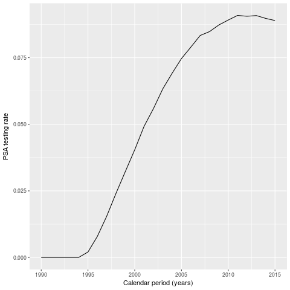

Prostata package for R
Background
Prostata is a natural history model of prostate cancer model which extends the model developed by Ruth Etzioni and colleagues at the Fred Hutchinson Cancer Research Center1 (FHCRC). This is a well validated prostate cancer natural history model developed within the Cancer Intervention and Surveillance Modeling Network (CISNET)2. We here provide our extensions of the model with extended states and finer calibration. The model is provided as an R package, depending on our microsimulation frame work.
We specifically developed this package for modelling the cost-effectiveness of prostate cancer screening, where many (e.g. 107) men are followed from birth to death.
Installing prostata
- 1 Dependencies:
A convenient, but not required, way of installing github-packages in R is to use devtools. Since devtools is available on CRAN just run the following in R.
install.packages("devtools")
- 2a Installation with devtools:
To install the microsimulation using devtools just run the following in R:
require(devtools) install_github("mclements/prostata")
- 2b Alternative installation from shell:
If you prefer the shell over devtools, just run the following to download the microsimulation R-package:
git clone https://github.com/mclements/prostata.git
To install the prostata R-package run this in your shell:
R CMD INSTALL path_to_prostata
Running the simulation
Available screening scenarios
There are a number of available testing scenarios. They determine testing frequencies and re-testing intervals over calendar period and ages.
noScreening- no screening test, only diagnosis from symptomstwoYearlyScreen50to70- two-yearly screening from age 50 to 70fourYearlyScreen50to70- four-yearly screening from age 50 to 70screen50- one screen at age 50screen60- one screen at age 60screen70- one screen at age 70screenUptake- current testing pattern in Swedengoteborg- risk stratified re-screening 2+4 from age 50 to 70risk_stratified- risk stratified re-screening 4+8 from age 50 to 70mixed_screening- risk stratified re-screening 2+4 from age 50 to 70 & opportunistic testing for other ages
require(prostata) sim1 <- callFhcrc(n=1e6, mc.cores=3, screen="screenUptake")
#> user system elapsed #> 144.180 0.180 91.173
Results
Type of outcome: prevalence, event rates or rate ratios
Some of the more commonly used outcomes are provided through a plot
and a predict function. The available outcomes are:
prevalence- proportion of a population in the groups described belowincidence.rate- rate of clinical diagnosis & screen initiated diagnosistesting.rate- rate of screening tests (e.g. psa tests)biopsy.rate- rate of clinical diagnostic biopsies & screen initiated biopsiesmetastasis.rate- rate of natural history transitions to metastatic cancerpc.mortality.rate- rate of cancer deathsallcause.mortality.rate- rate of cancer deaths & other deathsincidence.rr- rate ratio of clinical diagnosis & screen initiated diagnosistesting.rr- rate ratio of screening tests (e.g. psa tests)biopsy.rr- rate ratio of clinical diagnostic biopsies & screen initiated biopsiesmetastasis.rr- rate ratio of natural history transitions to metastatic cancerpc.mortality.rr- rate ratio of cancer deathsallcause.mortality.rr- rate ratio of cancer deaths & other deaths
To construct an outcome not listed above you can use the objects in
sim1$summary to construct them.
To simply plot e.g. the incidence rate of the simulated screening scenario the following line can be used:
plot(sim1, type = "incidence.rate", xlab="Age (years)", xlim=c(40, 90))

Groups in natural and clinical history
The predict function returns various outcomes (rate, rate ratios
or prevalence) as described above. It can also be used to predict
outcomes by a number of subgroups. The available subgroups are two
time-scales and four natural history categories:
age- grouping by single year of age this is the default time-scaleyear- grouping by single calendar year as an alternative time-scalestate- grouping by healthy, localised & metastaticgrade- grouping by gleason grade<=6,7&>=8dx- grouping by not diagnosed, screen diagnosis & clinical diagnosispsa- grouping by psa<3&>=3
Below is the PSA testing rate by calendar period predicted and
displayed with ggplot.
require(ggplot2) ggplot(predict(sim1, group = "year", type="testing.rate"),aes(x=year, y=rate)) + xlim(1990, 2020) + geom_line() + ylab("PSA testing rate") + xlab("Calendar period (years)")

The outcomes can also be predicted by several subgroups at once. Plotted below is the prevalence by age, clinical state and diagnoses. Note that since this is a natural history of disease model also the unobserved not diagnosed cancers are predicted.
ggplot(predict(sim1, type = "prevalence", group=c("age", "state", "dx")), aes(x=age, y=prevalence*1e5, colour = dx)) + geom_line() + ylab("Prevalence (cases per 100,000)") + xlab("Age (years)") + facet_grid(. ~ state)

Comparing multiple scenarios
In order to compare multiple screening scenarios the predict
function has a second argument for simulation objects. It can be used
to pass a second simulation objects if you which to compare two
screening scenarios or a list of simulation objects for comparing
several screening scenarios. The type and group argument works as
described earlier. Below is the incidence rate with the current
uptake pattern compared with the hypothetical no screening
scenario.
sim2 <- callFhcrc(n=1e6, mc.cores=3, screen="noScreening")
#> user system elapsed #> 106.032 0.660 54.287
ggplot(predict(sim1, sim2, group= "age", type = "incidence.rate"), aes(x=age, y=rate, colour = scenario)) + geom_line() + xlim(50, 85) + ylab("Incidence rate") + xlab("Age (years)")

Rate ratios and reference scenarios
If you which to investigate e.g. the prostate cancer mortality rate
ratio between the current uptake pattern and the no screening
scenarios simply use pc.mortality.rr as
type. Note that the first argument (expects a simulation object)
will be used for the reference rate against which the rates in the
second argument (expects a simulation object or a list of simulation
objects) will be compared.
When we look at rare events such at prostate cancer death the outcomes appear a little jumpy due to the stochasticity of the simulation. When we look at rate ratios this effect will get even more prominent. A larger simulation would reduce the Monte-Carlo variation, but for now lets settle with smoothing and focus on the ages with most events.
ggplot(predict(sim2, sim1, group = "age", type = "pc.mortality.rr"), aes(x=age, y=rate.ratio, colour = scenario)) + geom_smooth(span=5) + xlim(60, 85) + ylab("Prostate cancer mortality rate ratio") + xlab("Age (years)")